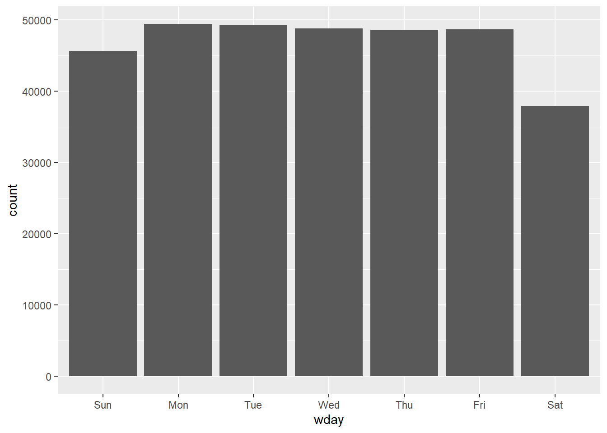
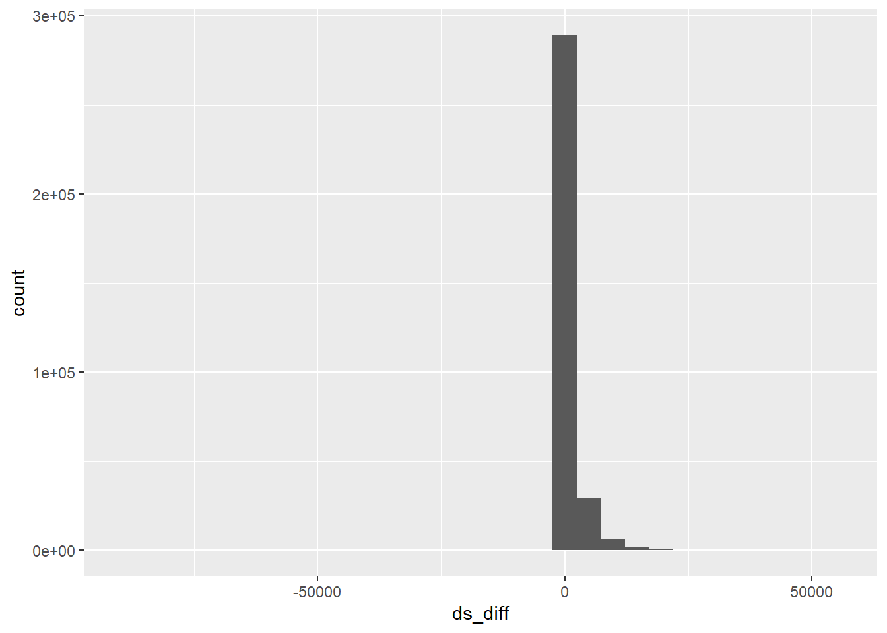

library(nycflights13)
library(tidyverse)Managing Dates and Times with Lubridate
We introduce functions from lubridate package in this lecture.
Datetime object has the base type – double
current_datetime <- now()
current_datetime
#> [1] "2024-10-18 22:06:25 CDT"
current_date <- today()
current_date
#> [1] "2024-10-18"
as.numeric(current_datetime)
#> [1] 1729307186
as_datetime(1721751333)
#> [1] "2024-07-23 16:15:33 UTC"
Sys.timezone() # Find the system time zone
#> [1] "America/Chicago"
as_datetime(1721751333, tz = "America/Chicago")
#> [1] "2024-07-23 11:15:33 CDT"
as_datetime(current_datetime)
#> [1] "2024-10-18 22:06:25 CDT"
as_date(current_datetime)
#> [1] "2024-10-18"
as_datetime(current_date)
#> [1] "2024-10-18 UTC"
as_date(current_date)
#> [1] "2024-10-18"Dates and Times format R can recognize directly
csv <- "
date,datetime
2022-01-02,2022-01-02 05:12
"
read_csv(csv)
#> # A tibble: 1 × 2
#> date datetime
#> <date> <dttm>
#> 1 2022-01-02 2022-01-02 05:12:00Exercises of converting other formats to the standard ISO8601 format
d1 <- "January 1, 2010"
d2 <- "2015-Mar-07"
d3 <- "06-Jun-2017"
d4 <- c("August 19 (2015)", "July 1 (2015)")
d5 <- "12/30/14" # Dec 30, 2014
t1 <- "1705"
t2 <- "11:15:10.12 PM"
mdy(d1)
#> [1] "2010-01-01"
parse_date(d1, "%B %d, %Y")
#> [1] "2010-01-01"
ymd(d2)
#> [1] "2015-03-07"
parse_date(d2, "%Y-%b-%e")
#> [1] "2015-03-07"
dmy(d3)
#> [1] "2017-06-06"
parse_date(d3, "%e-%b-%Y")
#> [1] "2017-06-06"
mdy(d4)
#> [1] "2015-08-19" "2015-07-01"
parse_date(d4, "%B %d (%Y)")
#> [1] "2015-08-19" "2015-07-01"
mdy(d5)
#> [1] "2014-12-30"
parse_date(d5, "%m/%e/%y")
#> [1] "2014-12-30"
parse_time(t1, "%H%M")
#> 17:05:00
parse_time(t2, "%I:%M:%OS %p")
#> 23:15:10.12Get components from the standard ISO8601 format
# For example,
datetime <- ymd_hms("2026-07-08 12:34:56") ### This is a Wednesday
year(datetime)
#> [1] 2026
month(datetime)
#> [1] 7
day(datetime)
#> [1] 8
yday(datetime)
#> [1] 189
wday(datetime)
#> [1] 4
wday(datetime, label = TRUE)
#> [1] Wed
#> Levels: Sun < Mon < Tue < Wed < Thu < Fri < Satmake_datetime()
flights %>%
select(year, month, day, hour, minute) %>%
mutate(departure = make_datetime(year, month, day, hour, minute)) %>%
print(width = Inf)
#> # A tibble: 336,776 × 6
#> year month day hour minute departure
#> <int> <int> <int> <dbl> <dbl> <dttm>
#> 1 2013 1 1 5 15 2013-01-01 05:15:00
#> 2 2013 1 1 5 29 2013-01-01 05:29:00
#> 3 2013 1 1 5 40 2013-01-01 05:40:00
#> 4 2013 1 1 5 45 2013-01-01 05:45:00
#> 5 2013 1 1 6 0 2013-01-01 06:00:00
#> 6 2013 1 1 5 58 2013-01-01 05:58:00
#> 7 2013 1 1 6 0 2013-01-01 06:00:00
#> 8 2013 1 1 6 0 2013-01-01 06:00:00
#> 9 2013 1 1 6 0 2013-01-01 06:00:00
#> 10 2013 1 1 6 0 2013-01-01 06:00:00
#> # ℹ 336,766 more rows
# Split 517 as 5 (which is hour, using 517 %/% 100)
# and 17 (which is minute, using 517 %% 100)
make_datetime_100 <- function(year, month, day, time) {
make_datetime(year, month, day, time %/% 100, time %% 100)
}
flights_dt <- flights %>%
filter(!is.na(dep_time), !is.na(arr_time)) %>%
mutate(
dep_time = make_datetime_100(year, month, day, dep_time),
sched_dep_time = make_datetime_100(year, month, day, sched_dep_time)
)
flights_dt %>%
mutate(wday = wday(dep_time, label = TRUE)) %>%
ggplot(aes(x = wday )) +
geom_bar()
Duration
flights_dt %>%
mutate(ds_diff = as.duration(dep_time - sched_dep_time)) %>%
arrange(desc(ds_diff))
#> # A tibble: 328,063 × 20
#> year month day dep_time sched_dep_time dep_delay arr_time
#> <int> <int> <int> <dttm> <dttm> <dbl> <int>
#> 1 2013 3 17 2013-03-17 23:21:00 2013-03-17 08:10:00 911 135
#> 2 2013 7 22 2013-07-22 22:57:00 2013-07-22 07:59:00 898 121
#> 3 2013 2 10 2013-02-10 22:43:00 2013-02-10 08:30:00 853 100
#> 4 2013 2 19 2013-02-19 23:24:00 2013-02-19 10:16:00 788 114
#> 5 2013 2 24 2013-02-24 19:21:00 2013-02-24 06:15:00 786 2135
#> 6 2013 10 14 2013-10-14 20:42:00 2013-10-14 09:00:00 702 2255
#> 7 2013 7 7 2013-07-07 21:23:00 2013-07-07 10:30:00 653 17
#> 8 2013 11 24 2013-11-24 23:01:00 2013-11-24 12:25:00 636 149
#> 9 2013 7 7 2013-07-07 20:59:00 2013-07-07 10:30:00 629 106
#> 10 2013 6 5 2013-06-05 20:28:00 2013-06-05 10:15:00 613 2308
#> # ℹ 328,053 more rows
#> # ℹ 13 more variables: sched_arr_time <int>, arr_delay <dbl>, carrier <chr>,
#> # flight <int>, tailnum <chr>, origin <chr>, dest <chr>, air_time <dbl>,
#> # distance <dbl>, hour <dbl>, minute <dbl>, time_hour <dttm>,
#> # ds_diff <Duration>
# %>%
# select(dep_time, sched_dep_time, ds_diff)
flights_dt %>%
mutate(ds_diff = as.duration(dep_time - sched_dep_time)) %>%
arrange(desc(ds_diff)) %>%
ggplot(aes(x=ds_diff))+
geom_histogram()